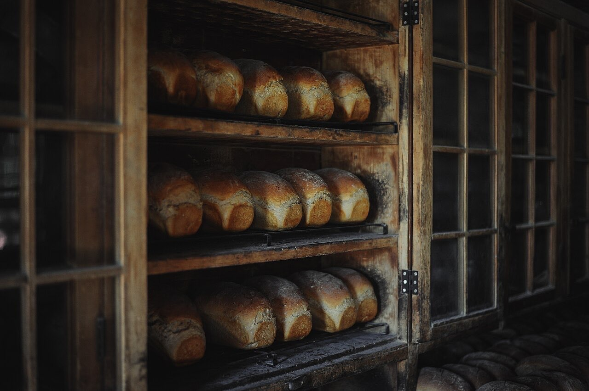
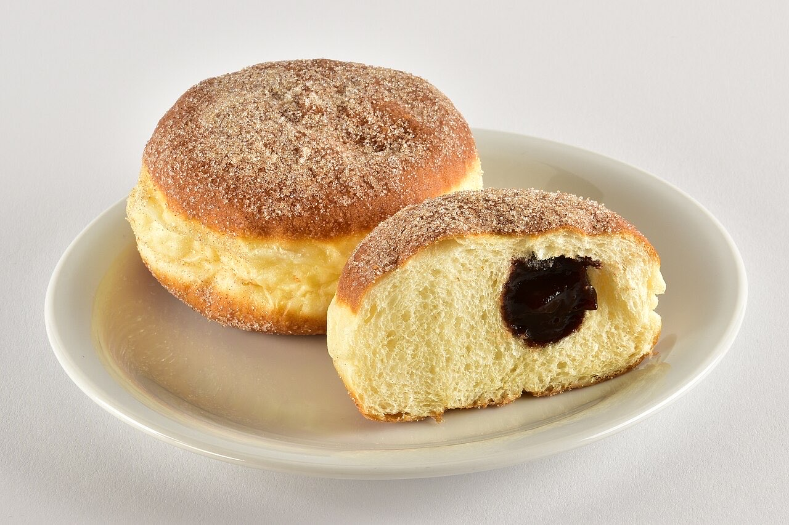

Bakery and pastry shop · Fermentões
Trigueirinha - Snack-Bar
Bread, sweets and coffee in Fermentões
Trigueirinha is a bakery, pastry shop and snack bar at Largo de Caneiros, in Fermentões. Come for morning coffee, fresh bread or a sweet treat in the afternoon.
Order by QR code
Order from your table by QR code, without waiting for staff.
Bakery and pastry shop
Bread and sweets in one stop, all day long.
4.6★ on Google
4.6★ from 727 Google reviews.



Illustrative photos · the final site uses your own.
QR code ordering
Guests order from the table. The order goes straight to the kitchen.
- Scan the table codeWith the phone camera, nothing to install.
- Choose and orderThe menu shows prices; guests add dishes and leave notes.
- The kitchen gets it instantlyThe order appears on the counter screen with the table number.
Point your camera and order here
Orders
Place your order
Tell us what you need and when you'd like to collect it or have it delivered. We reply by WhatsApp.
This is how the message would reach your WhatsApp. Nothing is sent in this demo.
Visit
Where to find us
R. de Caneiros 12, 4800-080 FermentõesOpening hours
Opening hours to be confirmed
Proposal for Trigueirinha - Snack-Bar
Like it? This could be your website.
This page was made especially for your business by João Machado, a web developer here in Guimarães. It includes:
- Fast mobile page with your name and identity
- Digital menu with QR code and orders placed from the table
- Menu and prices that are easy to update
- Buttons to call, send a WhatsApp and get directions
- Booking or order requests straight to WhatsApp
- Your own domain (e.g. trigueirinha.pt) linked to Google Maps
I take care of hosting and maintenance. No commitment.